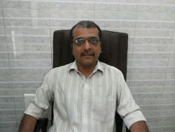

Navigation
We believe that at times a single healing method is inadequate in treating many of the chronic diseases like Diabetes, High Blood Pressure, PCOS etc. but when an integration of more than one method is adopted in treating patients, the results are more rewarding and help in achieving maximum health benefits and experiencing 'Wellness'.
Dr.Amul Kothare
Practising classical homeopathy over two decades in the suburb of Vile Parle (E), Mumbai , Maharashtra, India. Has gained lot of clinical experience as student from renowned homeopathic physicians and international teachers like Dr. Prafull Vijayakar (Founder of Predictive Homeopathy) and Dr. Rajan Sankaran (renowned international teacher and author of many invaluable books in homeopathy). The holistic approach to health has always inspired him as a student and motivated to practise classical homeopathy after initial training.
Dr.Anita Kothare
Practising classical homeopathy over two decades in the suburb of Vile Parle (E), Mumbai , Maharashtra, India. Has gained lot of clinical experience as student from renowned homeopathic physicians and international teachers like Dr. Prafull Vijayakar (Founder of Predictive Homeopathy) and Dr. Rajan Sankaran (renowned international teacher and author of many invaluable books in homeopathy). The holistic approach to health has always inspired him as a student and motivated to practise classical homeopathy after initial training.
Dr.Rikin Kanani
An experienced clinical physician since the year 1992, Dr Rikin Kanani has also done a certificate course in 'Fitness' from a wellknown institute in Mumbai. His presence as an advisor in the team completes one of the most important aspect of Wellness Aspects, i.e physical fitness.

